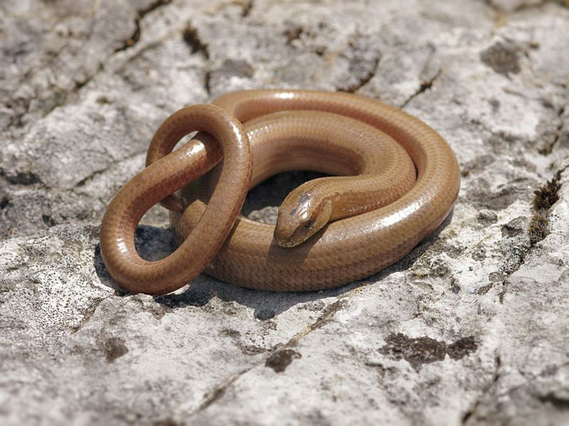

Blindschleiche
Anguis fragilis
Ein heimlicher Riedbewohner ist die Blindschleiche. Wer jedoch die ausgewählten Ruheplätze kennt hat wenig Mühe die in ganz Europa beheimatete Schleichenart aufzuspüren. Bevorzugt werden feuchte und pflanzenreiche Biotope. Dort findet sie auch ihre Lieblingsnahrung: kleine Schnecken. Wie der Artname „fragilis“ andeutet, können nicht nur Eidechsen, sondern auch die nahe verwandten Blindschleichen bei Gefahr ihren Schwanz abstoßen.